The aim of this project was to improve
the user experience of buying a pair of
glasses with a prescription on RayBan's website.
Previously, it was difficult for the user to understand
the different steps of the flow. RayBan also
wanted to be able to provide the customers with
feedback regarding availability of glasses based
on the information provided in their prescriptions.
To the right you'll see a new, improved prescription
flow where all the above requirements are met.
The design of visuals and layout are following
Rayban's current line of design to maintain the site's
overall standardizations.
➝ Scroll down to see userflow, UX features, and a video of the Prescription flow.
Communication with customer service support is present throughout the flow.
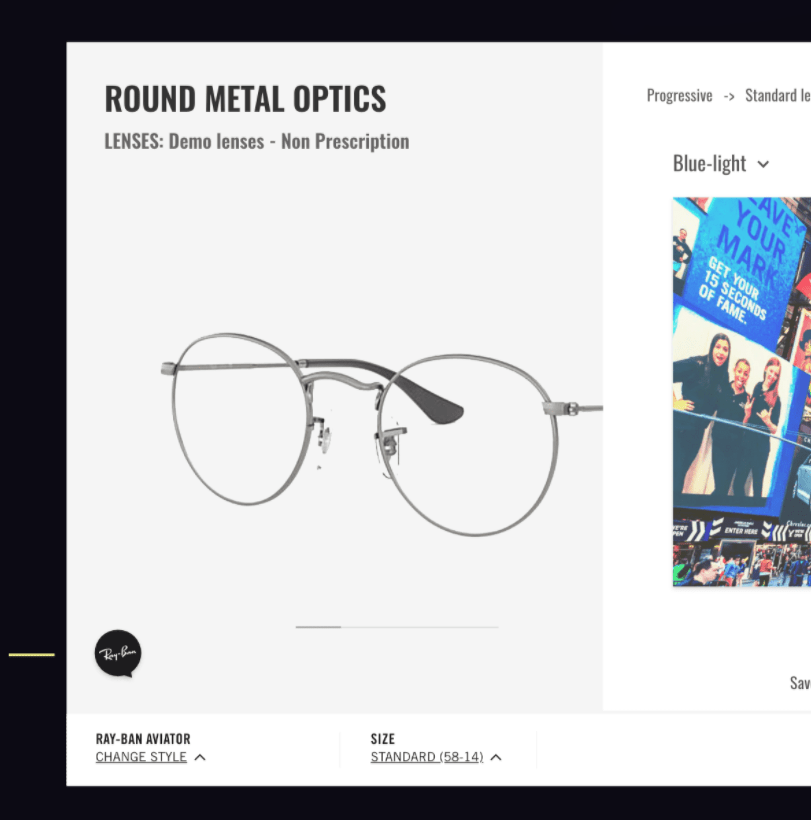The users can always see which choice they have done so far.
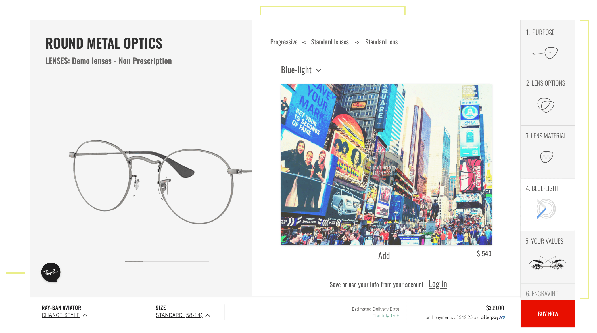 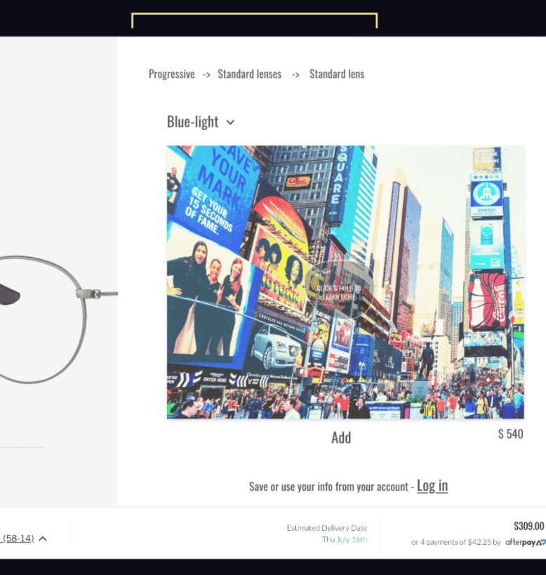All the steps in the userflow are visible throughout the entire user journey, which gives the users the freedom to navigate back and forth easily.
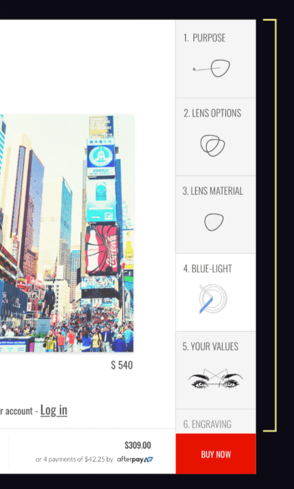The users do not have to go through all the steps in the user flow. They can at any time choose to go directly to the final step of purchasing what they have selected so far.


 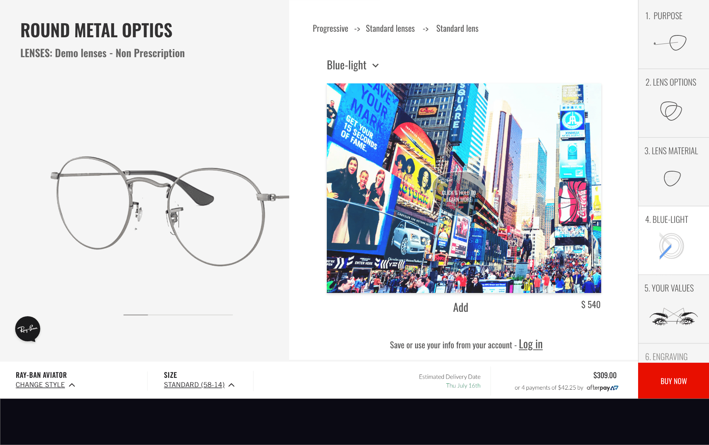
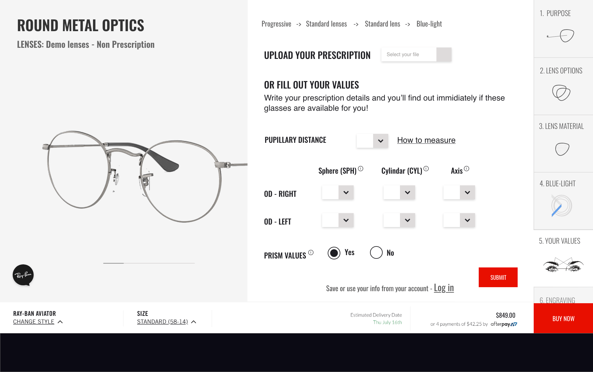
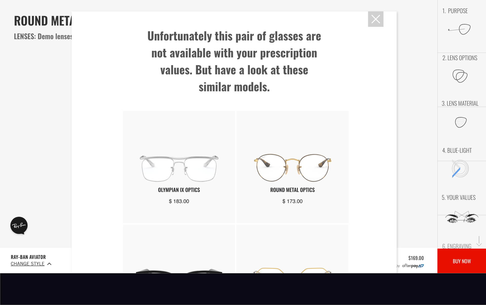
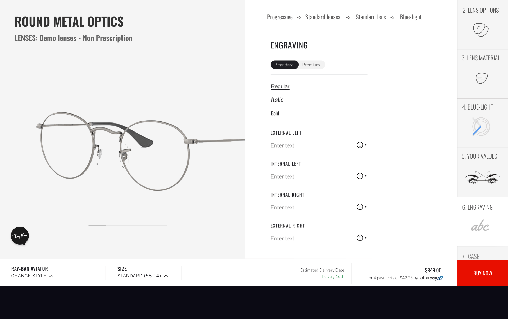
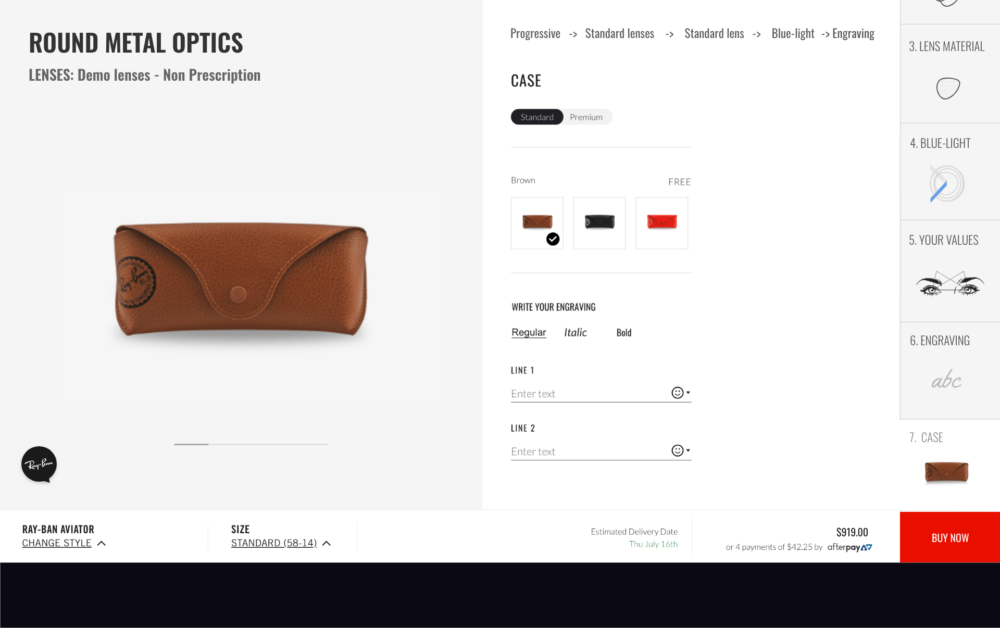
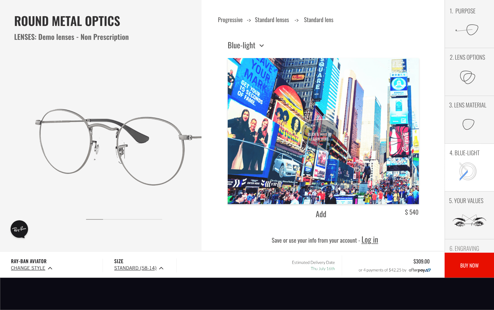
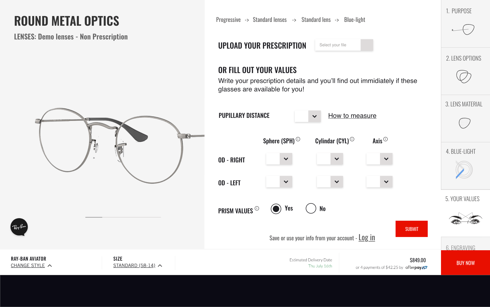
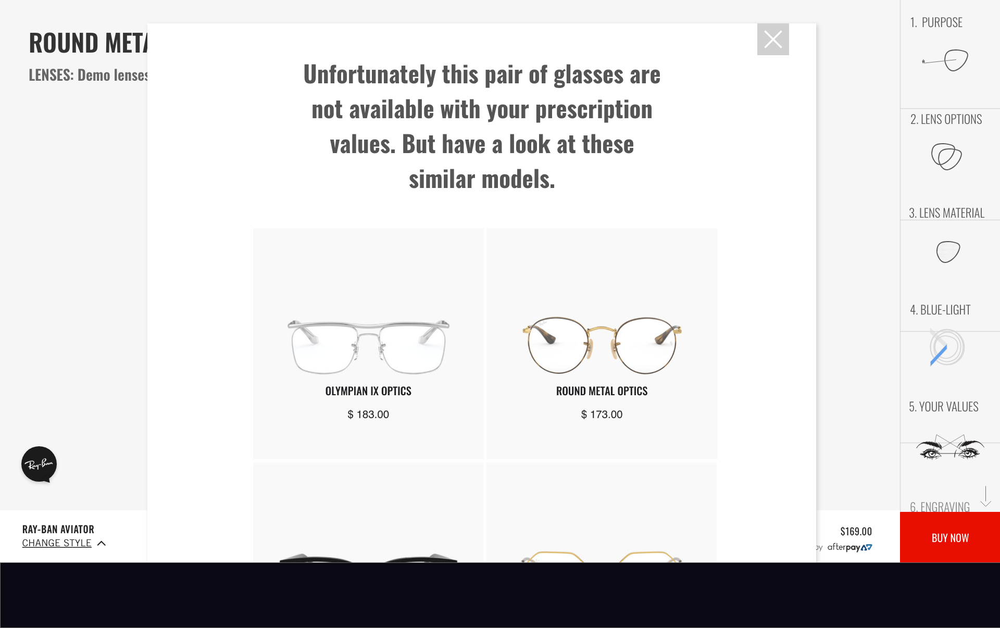
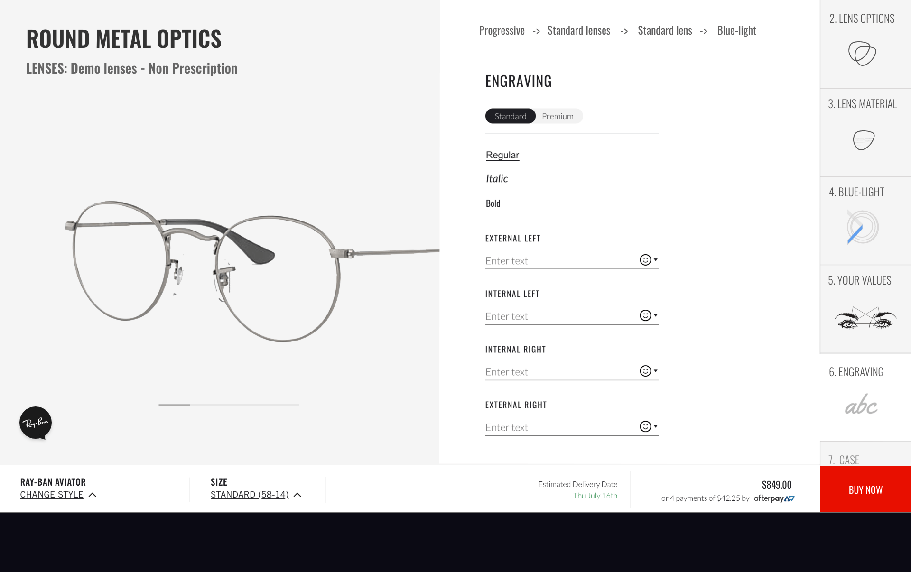
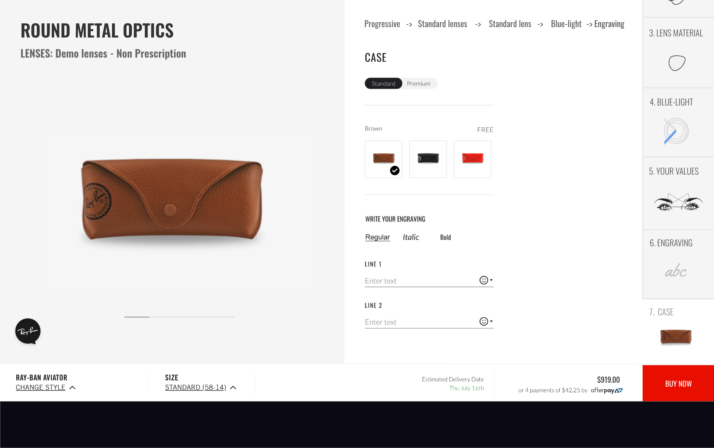